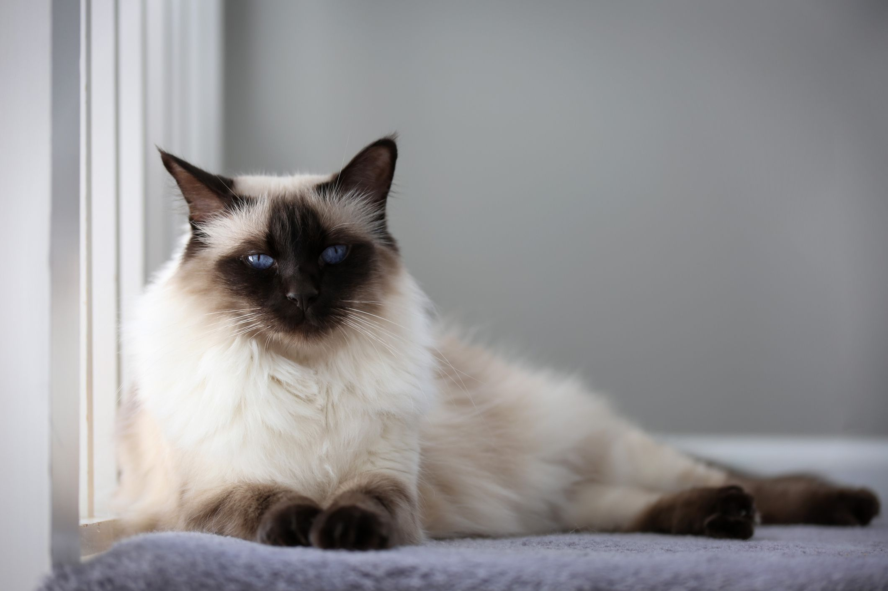

×

Balinese Cat
The Balinese cat is a medium-sized feline known for its graceful, slender, and elegant appearance. It boasts a fine-boned build and sports a semi-long, silky coat. Unlike many other long-haired breeds, the Balinese coat lacks an undercoat, resulting in a sleek, close-fitting, non-bulky fur that is far less prone to matting.